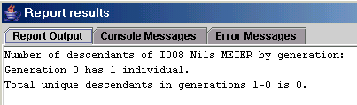

LifeLines-Reporte weden nicht direkt von GenJ unterstützt. Hierzu ist ein Zusatzprogramm namens GDBI erforderlich. GDBI steht für Gedcom DataBase Interface und integriert sich zur Erweiterung des Funktionsumfangs in verschiedene genealogische Programme. GenJ ist eine der unterstützten Anwendungen, wodurch unter anderem das Arbeiten mit LifeLines-Reporten möglich wird.
Die Installation für die Benutzung mit GenJ ist in der GDBI-Dokumentation (auch über die GDBI-Homepage erreichbar) erklärt. Die entsprechende Datei heißt genj.html. Dazu zwei Ergänzungen:
Zum Ausführen von LifeLines-Reporten ist lediglich GDBI: LifeLines report relevant. Nach dem Starten dieses Reports erscheint ein Dateiauswahl-Fenster, wo der gewünschte LifeLines-Report gewählt wird. Daraufhin verarbeitet GDBI die Report-Anweisungen und zeigt das Ergnis an.

LifeLines-Reporte
http://cvs.sourceforge.net/viewcvs.py/lifelines/lifelines/reports/LifeLines-Reportdokumentation
http://www.math.clemson.edu/~rsimms/genealogy/ll/
http://cvs.sourceforge.net/viewcvs.py/lifelines/lifelines/docs/